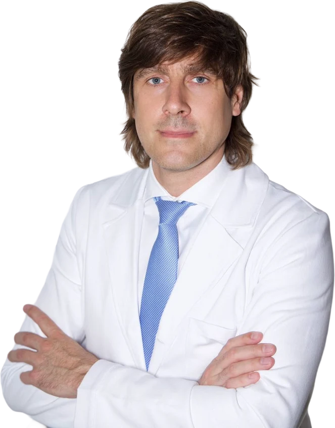
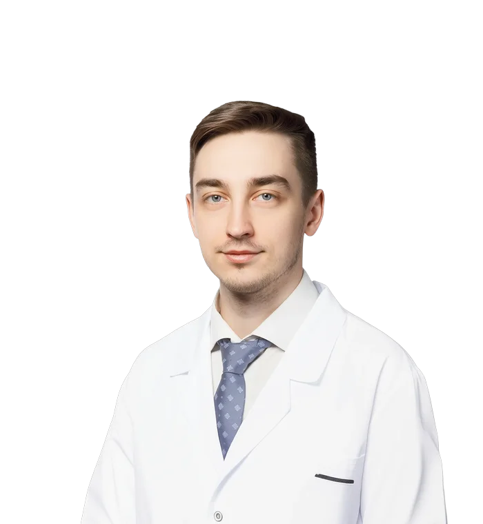
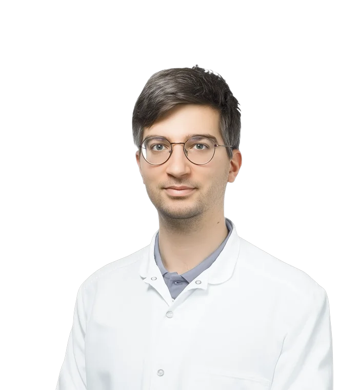
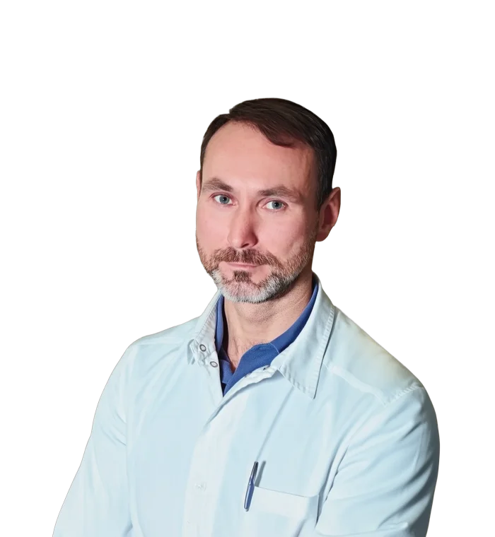

Частная онкологическая клиника
Сложные решения —в спокойном пространстве
Тактику лечения подбирают для каждого пациента, сложные случаи разбирают на консилиуме. Клинику возглавляет онколог Евгений Ледин, у него 20 лет практики.
Тактику лечения подбирают для каждого пациента, сложные случаи разбирают на консилиуме. Клинику возглавляет онколог Евгений Ледин, у него 20 лет практики.
Терапия по международным протоколам с оригинальными европейскими препаратами.
Все услуги и цены →
Рак можно вылечить, если вовремя его найти, точно поставить диагноз и правильно выбрать тактику лечения
В интерьере природные оттенки, тёплый свет и живопись на стенах, фоном звучит тихая музыка.
В клинике не пахнет лекарствами.
Дерево, камень и текстиль спокойных цветов, за окнами зелень.
В палате есть зона отдыха, рядом могут находиться родственники.

Онколог, д. м. н., профессор, заслуженный врач РФ
Опыт с 1972 года
Онколог, гематолог, к. м. н.
Опыт с 2003 года
Онколог, радиотерапевт, д. м. н., доцент
Опыт с 2012 года
Онколог-химиотерапевт, заведующий отделением химиотерапии
Опыт с 2020 года
Онколог-химиотерапевт
Опыт с 2021 годаОнколог-химиотерапевт
Опыт с 2021 года
Врач-генетик
Медико-генетическое консультирование
Терапевт, кардиолог, пульмонолог
Опыт с 2015 года
Терапевт высшей категории
Опыт с 2006 годаОставьте телефон, администратор перезвонит и запишет на приём.
Врач изучит документы и результаты обследований, объяснит ситуацию простым языком.
Сложный случай разбирают несколько специалистов и вместе выбирают тактику.
Вы получаете индивидуальную карту лечения. Между приёмами лечащий врач остаётся на связи.
Оставьте номер, администратор перезвонит и запишет на приём.
+7 495 120-84-44